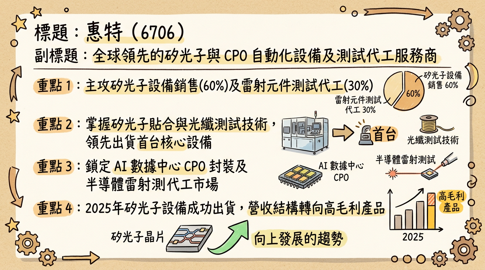
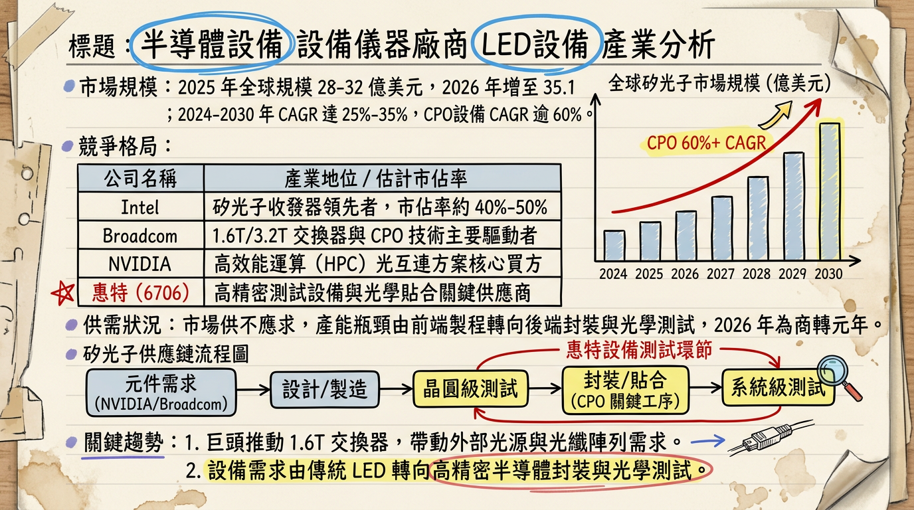
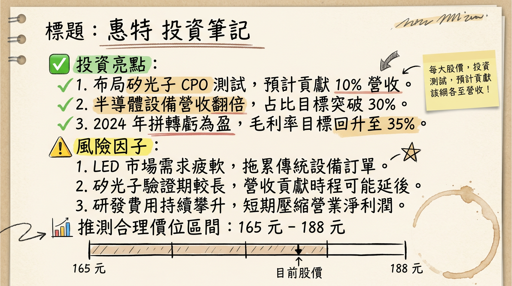

6706 惠特 (FitTech) 深度研究報告：轉型矽光子與雷射代工，2026 迎來獲利轉折元年
一句話摘要
惠特正由傳統 LED 設備商全面轉型為矽光子 (SiPh) CPO 設備與雷射測試代工龍頭，預計 2026 年第二季實現單季轉盈，開啟高毛利代工業務主導的新成長週期。
公司概覽
惠特科技 (FitTech) 早期為全球 LED 點測與分選設備龍頭。隨 LED 產業飽和，公司自 2024 年起積極跨入半導體先進封裝、矽光子測試及雷射精密加工領域，並透過「設備銷售」與「代工服務」雙軌並行模式，建立競爭護城河。
業務產品線與營收結構 (2025 Q4 預估值)：
| 業務類別 | 主要產品/服務內容 | 營收佔比 (2025 Q4) | 2026 展望佔比 |
|---|
| 設備銷售 | 矽光子元件貼合機、CPO 測試設備 (FAT/FOT/MFR)、雷射清潔機、AI 眼鏡組裝機 | ~60% | ~40% (結構轉優) |
| 代工服務 | DFB/EEL 雷射元件測試、分選及劃線代工、LED 測試代工 | ~30% | >50% |
| 其他 | 零組件銷售、維修與售後服務 | ~10% | ~10% |
核心競爭優勢
矽光子關鍵設備國產化： 推出全台首台「矽光子元件貼合機」，並具備光纖陣列功能測試 (FAT) 與移除 (MFR) 技術，切入 NVIDIA/Broadcom 供應鏈 CPO 封裝環節。
雷射測試代工垂直整合： 具備邊射型雷射 (DFB、EEL) 元件的點測、分選及劃線 (Scribing) 一站式代工能力，目標成為台灣最大雷射光源代工廠。
精密光學組裝技術： 利用高精度對位優勢，已接單開發 AI 眼鏡精密組裝與測試設備，搶佔穿戴式 AI 裝置先機。
資產整合優勢： 2025 年 9 月台中新總部落成，整合原先分散的 6 處廠區，大幅提升生產與研發協同效率。
財務分析
1. 月營收趨勢
2026 年 1 月營收雖受轉型期空窗影響較去年同期下滑，但已出現逐月復甦跡象，創下近 7 個月新高。
| 月份 | 營收金額 (萬元) | 月增率 (MoM) | 年增率 (YoY) | 備註 |
|---|
| 2026/01 | 5,039 | +XX% (估) | -63.8% | 創 7 個月新高，轉型產品驗證中 |
| 2025/12 | 4,210 (估) | -- | -- | 營運低谷期 |
2. 季度獲利能力趨勢
2025 Q3 毛利率出現顯著跳升，顯示產品組合優化（矽光子設備出貨）已見成效。
| 季度 | 毛利率 (%) | 營益率 (%) | 淨利率 (%) | EPS (元) |
|---|
| 2024 Q4 | 7.87% | -24.47% | -6.19% | -- |
| 2025 Q1 | 15.40% | -16.64% | -3.84% | -- |
| 2025 Q2 | 9.58% | -37.60% | -100.65% | -- |
| 2025 Q3 | 36.90% | -72.00% | -20.31% | -3.69 (累計) |
法說會重點（2025/11/25）
- 轉盈時間表： 管理層明確給出 2026 年第二季前實現單季轉虧為盈 的目標。
- 代工業務爆發： 隨著 AI 資料中心對 ELS (外部光源) 需求增加，DFB/EEL 雷射代工將成為 2026 年主要成長引擎，預期營收佔比將過半。
- 存貨處理： 2024 年已提列 98% LED 舊機台呆帳，2025-2026 年將輕裝上陣，聚焦半導體新業務。
券商觀點
法人看好惠特在 CPO 與雷射代工領域的先行者優勢，雖然 2025 年仍受虧損影響，但 2026 年的高成長性已反映在評價上。
| 券商名 | 目標價 (TWD) | 評等 | 日期 | 核心邏輯 |
|---|
| 本土大型券商 | 180 | 買進 | 2025/11/06 | 看好矽光子設備商轉與 DFB 代工放量 |
| 綜合研究機構 | 150 | 中立/偏多 | 2026/02/26 | 技術面突破，等待 2025 年報利空出盡 |
財報深度分析
- 利潤率分析： 2025 Q3 毛利率回升至 36.9%，主要受惠於 CPO 元件貼合機 小量出貨。未來隨代工佔比提升，毛利率有望穩定在 35-40% 區間。
- 存貨分析： 存貨週轉天數高達 1238.5 天，主因轉型期舊產品去化慢且新產品需備料實驗。市場需關注 2026 Q1 是否有顯著下降。
- 資本支出： 2024-2025 投入重金於台中新總部與代工設備。2025 Q3 負債比約 46%，透過現增與可轉債 (CB) 充實資金，目前結構尚屬穩健。
股權異動與資本工具
- 可轉換公司債 (CB)： 惠特二 (67062)，發行總額 5 億元，轉換價格目前調整至 176.0 元。
- 現金增資： 2024 年 11 月完成，認購價 132 元。此價格具備強大支撐，目前市價 (133.5 元) 已站回增資價。
- 股權變動： 2025 年 4-5 月法人董事有小幅調節，但隨著 2026 年轉型明朗化，主力資金於 2026 年 2 月下旬出現明顯回補。
產業分析：矽光子與 CPO 市場競爭格局
全球矽光子市場預計 2026 年達 35.1 億美元，2025-2030 年 CPO 設備 CAGR 預估 >60%。
| 競爭對手 | 主要角色 | 惠特競爭優勢比較 |
|---|
| ficonTEC (德商) | 全球高精度封裝設備龍頭 | 惠特具備本土化服務速度，且兼具「代工」彈性。 |
| 上詮 (3363) | CPO 封裝與 FAU | 惠特專注於「測試」與「貼合設備」，與上詮具備上下游協作空間。 |
| 聯亞 (3081) | 矽光子 InP 磊晶 | 惠特為其下游測試代工之潛在合作夥伴。 |
近期催化劑 (Catalysts)
* 2026/03/06 董事會公布 2025 年報，市場預期利空出盡。
* 矽光子 CPO 設備通過美系大廠驗證並開始規模放量。
* 仲裁案獲賠金額 (約 14 億元) 若正式認列業外，將使 EPS 暴增。
* 2025 年報虧損幅度若高於預期。
* 存貨周轉率改善速度慢於預期。
⭐ 成長動能時間軸
- 2025/09： 台中新總部啟用，整合 6 處廠區產能。
- 2025 Q4： 首批矽光子 CPO 貼合設備交付客戶驗證。
- 2026/01： 營收止跌回升，創 7 個月新高。
- 2026 Q2： 關鍵轉折點，目標單季轉虧為盈，雷射代工營收佔比過半。
- 2026/H2： AI 眼鏡精密組裝機台量產出貨。
2026 展望
- 成長動能： AI 資料中心 1.6T/3.2T 交換器帶動 CPO 設備需求；外部光源 (ELS) 普及推升 DFB/EEL 雷射測試代工。
- 潛在風險： 傳統 LED 業務持續萎縮；新設備驗證進度延遲；折舊費用隨新廠落成而增加。
投資結論
轉型陣痛期已過： 2024-2025 為惠特的營運谷底，利空已多數反應在股價中。
獲利體質轉優： 毛利率由 10% 以下跳升至 30% 以上，顯示公司成功轉向高附加價值的半導體設備領域。
目標價區間建議： 考量 2026 年獲利轉正及矽光子題材，給予「買進」評等。短期支撐看現增價 132 元，中期目標價看 170-180 元（回歸 CB 轉換價與法人評價區間）。
本報告由 AI 自動產生，資料來源為公開網路資訊，僅供參考，不構成投資建議。產生時間：2026-03-01 02:28
📊 資訊卡


